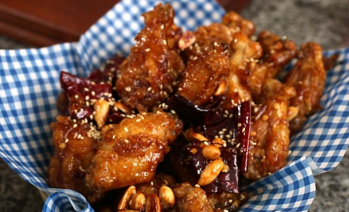

Dakgangjeong

Description
Crispy and crunchy fried chicken in a sweet, spicy glace topped with roasted chopped peanuts and toasted sesame seeds
Ingredients
- 3½ pounds chicken wings (about 1.6 kg), washed and drained
- ½ teaspoon kosher salt
- ½ teaspoon ground black pepper
- 1 teaspoon minced ginger
- ⅔ cup potato starch or corn starch
- ⅓ cup peanuts (optional)
- 4 cloves garlic, minced
- 3 to 4 large dried red chili peppers, seeded, cut crosswise into ⅓ inch pieces (optional)
- ¼ cup soy sauce
- ½ cup rice syrup or corn syrup
- 1 tablespoon white vinegar
- 1 tablespoon mustard (optional)
- 1 tablespoon brown sugar
- 1 tablespoon toasted sesame seeds
- Grapeseed oil (or vegetable oil, peanut oil)
Steps
- Mix chicken with seasonings and cover in starch.
- Fry in hot oil for 7 to 8 minutes.
- Shake off, let sit, then fry for another 12 to 15 minutes.
- Coat in seasoning sauce.
- Sprinkle sesame seeds over top and serve immediately.
Return to Main Page